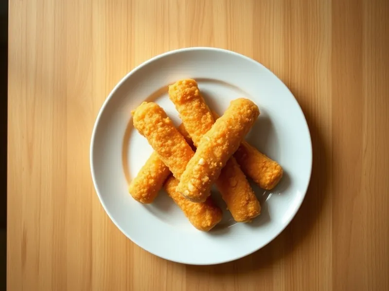

Фото: Иллюстрация ИИ, Cloudflare Workers AI
Крабовые палочки в кляре
Обжаренные крабовые палочки в сырном кляре за 15 минут
15 мин2 порц.439 ккал на порциюБ 21 · Ж 28 · У 25Интернациональная кухня
Открыть в приложении: порции, таймеры, список покупок
Продукты на 2 порц.
- Крабовые палочки1 шт
- Яйцо куриное2 шт
- Мука пшеничная2 ст. л.
- Сыр твёрдый40 г
- Молоко30 мл
- Растительное масло2 ст. л.
- Соль2 щеп.
Как готовить
- Снимите с крабовых палочек плёнку.
- Взбейте яйца с молоком и солью, добавьте мелко натёртый сыр и муку, перемешайте до густоты сметаны.
- Разогрейте масло на сковороде на среднем огне.
- Обмакивайте палочки в кляр и жарьте по 1-2 минуты с каждой стороны до золотистого цвета. Выложите на бумажное полотенце.
Совет. Палочки берите охлаждённые, а не замороженные: с размороженных стекает вода, и кляр отходит.